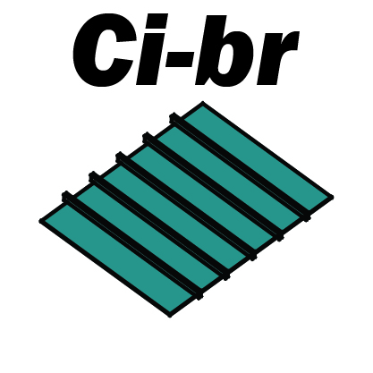
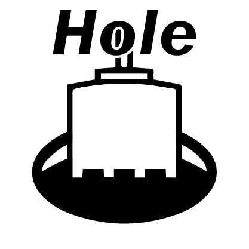
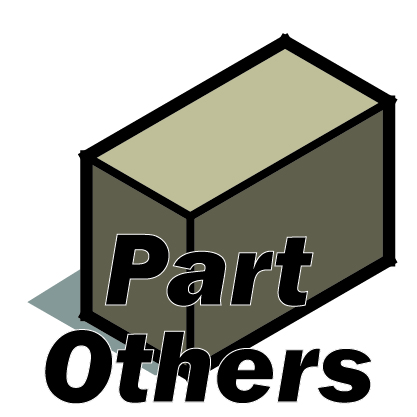
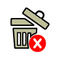
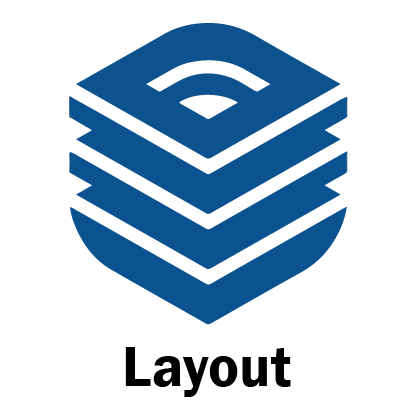

ภาพรวมระบบและขั้นตอนการทำงาน (Workflow Lifecycle)
ลำดับการทำงานมาตรฐานในการสร้างและประกอบโครงสร้างโมดูลาร์สำเร็จรูป
กฎเหล็กสำคัญที่สุด 3 ข้อก่อนเริ่มทำงาน:
- ต้องตั้งค่า Model Parameters ก่อน: เปิดหน้าต่าง Setting เพื่อใส่
House ID,Floor total (NFL), และPlatformมิฉะนั้นระบบจะไม่สามารถถอดแบบและส่งออก BOM ได้ - ต้องเจาะรูท่อ (Hole SB) ก่อนรัน Ceiling Joint เสมอ: หากมีชิ้นส่วน Ceiling Joint (
AGAZ*) ค้างอยู่ในโมเดล ระบบ Hole จะถูกบล็อกการทำงานทันที เพราะต้องอนุญาตให้คานซอย Sub-beam ขยับเลื่อนหลบแนวท่อได้อย่างอิสระ - เตรียมเลเยอร์ให้พร้อม: กล่องขอบเขตยูนิตต้องอยู่ใน
S-Unit, มีเส้นกริดในEE-GRID-UNIT, และแบบแปลนเส้น 2D อยู่ในเลเยอร์มาตรฐาน CAD (A-WALL,A-DOOR,SN-S PIPEฯลฯ)
สร้าง Unit โครงสร้าง
ครอบยูนิตใน S-Unit รัน Floor 1st/2nd/3rd เพื่อแปลง 2D Grid เป็นโครงสร้าง 3D เสา-คาน-พื้น-เพดาน
ดรอปพื้น & ช่องเปิด
รัน Bathroom (ดรอปพื้นห้องน้ำ), Void (เปิดช่องโล่ง), Stair (ช่องบันได), และ Entrance (ดรอปชานเข้าบ้าน)
เจาะรูท่อ & ข้อต่อพิเศษ
รัน Hole SB เจาะรูท่อและเลื่อนหลบคาน → ติดตั้ง Others, TurnBuckle → ปิดท้ายด้วย Ceiling Joint
ตรวจ QTO & Export BOM
กด Check Data เพื่อเทียบโมเดลกับฐานข้อมูล → กด Export CSV สรุปยอดลง Excel อัตโนมัติ
คู่มือขั้นตอนการกดใช้งานแต่ละไอคอน (สำหรับคนทำงาน)
รายละเอียดวิธีครอบเลือกวัตถุ, การคลิก & ตั้งค่ากล่องโต้ตอบ, และสิ่งที่ระบบสร้างให้ในโมเดล 3D ครบทั้ง 18 ไอคอน
S-Unit พร้อมเปิดเลเยอร์ CAD 2D
S-Unit
AABP21000 ให้ทันที
S-Unit

P เช่น AGA5FSDK01****1P**) เว้นช่องว่างให้ท่อสุขาภิบาล


2ZY2FCTT***4***, 2ZY2FCTS*D*4*A*)
ABL###_______**) ที่ระดับความสูง 3,245 มม. บนหัวเสา
S-InteriorWall
AGAZ* ให้ครบทุกรอยต่อ
C:/QHeim/takeoffcomp.csv และเด้งเปิด Microsoft Excel แสดงตารางสรุปยอดวัสดุทันที


ตรรกะการวิเคราะห์พิกัดและโมดูลาร์ (Direction Codes 01-12)
การคำนวณ Raytest ตรวจจับเพื่อนบ้าน 4 ทิศ และตรรกะการตัดขอบ Smartboard 83 มม.
| รหัส Dir | ซ้าย (-X) | ล่าง (-Y) | ขวา (+X) | บน (+Y) | ลักษณะตำแหน่งในแปลน | ด้านที่ตัดขอบ Smartboard (83mm) |
|---|---|---|---|---|---|---|
| 01 | 1 (เปิด) | 0 (ติด) | 1 (เปิด) | 1 (เปิด) | ยูนิตเดี่ยวยื่นปลายบน | T, L, R |
| 02 | 1 (เปิด) | 0 (ติด) | 1 (เปิด) | 0 (ติด) | ยูนิตแถวกลางเปิดซ้าย-ขวา | L, R |
| 03 | 1 (เปิด) | 1 (เปิด) | 1 (เปิด) | 0 (ติด) | ยูนิตเดี่ยวยื่นปลายล่าง | L, R, B |
| 04 | 1 (เปิด) | 0 (ติด) | 0 (ติด) | 1 (เปิด) | มุมบนซ้าย (Top-Left Corner) | T, L |
| 05 | 1 (เปิด) | 0 (ติด) | 0 (ติด) | 0 (ติด) | ขอบซ้าย (Left Edge) | L |
| 06 | 1 (เปิด) | 1 (เปิด) | 0 (ติด) | 0 (ติด) | มุมล่างซ้าย (Bottom-Left Corner) | L, B |
| 07 | 0 (ติด) | 0 (ติด) | 0 (ติด) | 1 (เปิด) | ขอบบน (Top Edge) | T |
| 08 | 0 (ติด) | 0 (ติด) | 0 (ติด) | 0 (ติด) | ตรงกลางอาคารล้อมรอบ 4 ด้าน (Center Core) | - |
| 09 | 0 (ติด) | 1 (เปิด) | 0 (ติด) | 0 (ติด) | ขอบล่าง (Bottom Edge) | B |
| 10 | 0 (ติด) | 0 (ติด) | 1 (เปิด) | 1 (เปิด) | มุมบนขวา (Top-Right Corner) | T, R |
| 11 | 0 (ติด) | 0 (ติด) | 1 (เปิด) | 0 (ติด) | ขอบขวา (Right Edge) | R |
| 12 | 0 (ติด) | 1 (เปิด) | 1 (เปิด) | 0 (ติด) | มุมล่างขวา (Bottom-Right Corner) | R, B |
งานดรอปพื้นห้องน้ำ, บันได, Void, และทางเข้า
สถาปัตยกรรมโครงสร้างลดระดับและการปรับแต่งแนวคานซอยรับแรง
🚿 Bathroom & Dropped Floor (Heim_MakeWC.rb)
- รหัสโมเดล: 1822 (
SDB), 1827 (SDC), 2213 (SDD), 2215 (SDE), 2218 (SDF), 2222 (SDG), 2231 (SDI), 2236 (SDJ), 2245 (SDK), 2254 (SDL) - พื้นลดระดับ: แปลงโครงสร้างพื้นเป็นพื้นดรอปเพื่อรองรับงานระบบท่อระบายน้ำทิ้ง
- Double Board: เสริมแผ่น Smartboard ชั้นที่ 2 (
SB_18XหรือSB_25X) ยกสูงขึ้น +25 มม. สำหรับปูกระเบื้อง - Ceiling Below BR: รันคำสั่งเปลี่ยนฝ้าชั้นล่างให้มีรหัส
Pต่อท้าย เพื่อให้มีช่องว่างใต้ท้องคานเดินท่อน้ำทิ้ง
🪜 Stair & Void (Heim_MakeStair / MakeVoid)
- Void Codes: ขนาด 2222 (
VFA), 2227 (VFB), 2231 (VFC), 2236 (VFD), 2241 (VFE), 2245 (VFF) พร้อมตำแหน่ง 0 หรือ L - Stair Models: บันไดตัว C (C22, C27, C36, C45) และตัว U (U24, U29, U31, U36) ทั้งแบบ Edgeup L/R และ Middleup L/R
- Trimmer Beams: ตัดเปิดแผ่นพื้น Smartboard และฝ้าเพดาน พร้อมวางคานเหล็กซอยรับแรงรอบช่องเปิดทั้ง 4 ด้าน
ระบบเจาะรูงานระบบท่อ (Hole SB - Heim_MakeHole.rb)
การเจาะรู Smartboard อัตโนมัติและการเลื่อนหลบคานซอยรับแรง
เจาะรูตามขนาดเส้นผ่านศูนย์กลางจริงจาก CAD:
- • PIPESEC1: Ø 48 mm
- • PIPESEC2: Ø 60 mm
- • PIPESEC3: Ø 120 mm
- • PIPESEC4: Ø 134 mm
- • PIPESEC5: Ø 155 mm
ระบบยิง Raytest ตรวจสอบแนวคานซอย (AABI*) รอบรูเจาะ หากพบว่าชนหรือทับแนวท่อ สคริปต์จะ เลื่อนขยับคานซอยหลบระยะท่อให้อัตโนมัติ เพื่อความปลอดภัยของโครงสร้าง
สแกนหาตำแหน่งโคมไฟ Downlight ในเลเยอร์ EE-EQPM-LTG และทำการเปลี่ยนแปฝ้าเพดานบริเวณนั้นเป็นรุ่นพิเศษ AAGA0101D#DS ให้โดยอัตโนมัติ
Hole SB ก่อนรันคำสั่ง Ceiling Joint เสมอ หากมี Ceiling Joint อยู่ในโมเดล ระบบจะไม่ยอมทำงานเพื่อป้องกันการบิดตัวของโครงสร้าง
อุปกรณ์พิเศษ Setback, Turnbuckle, และ Ceiling Joint
การติดตั้งอุปกรณ์ค้ำยันลม, รอยต่อยูนิตระดับต่าง, และแผ่นเหล็กผูกข้อต่อฝ้าเพดาน
คำนวณรอยต่อลดระดับข้ามชั้น (UnitDiffZ) และด้านกว้างไม่เท่ากัน (KetaDiffX)
เลือก 2 Full Units เพื่อคัดลอกชิ้นส่วน Setback ไปยังยูนิตอื่นได้อย่างรวดเร็ว
ติดตั้งเหล็กค้ำยันลมรหัส ABL### ที่ระดับความสูง 3,245 มม. บนหัวเสาโครงสร้าง
เชื่อมข้อต่อแปฝ้าเพดานระหว่างยูนิตข้างเคียงด้วยชุดข้อต่อรหัส AGAZ*
ระบบถอดแบบวัสดุ (Check Data & Export BOM)
การตรวจสอบความถูกต้องและการส่งออกข้อมูลเชื่อมต่อ Microsoft Excel
📊 Check Data Dialog (StrucTemplate.takeoffdialog)
หน้าต่าง HTML Dialog สำหรับเปรียบเทียบชิ้นส่วนระหว่างโมเดล 3D กับฐานข้อมูล Database:
- แสดงตารางเปรียบเทียบจำนวนชิ้น (Model Qty vs Database Qty)
- แสดงผลสถานะ Matching (ตรงกัน) และ Diff (ผลต่าง/ขาด/เกิน)
- Interactive Selection: คลิกที่แถวใดในตาราง ระบบจะ Highlight เลือกวัตถุชิ้นนั้นในโมเดล 3D ให้ทันที
📈 Export CSV to Excel (StrucTemplate.takeoffxls)
ประมวลผลและส่งออกรายการวัสดุโครงสร้างทั้งหมดลงในไฟล์:
โครงสร้างฟิลด์: House_ID, Unit(XX), Part_ID, Qty, Method, Place, Station, Position
พร้อมสั่งเปิดโปรแกรม Microsoft Excel ขึ้นมาแสดงรายงานสรุปทันที
ตารางสรุปเลเยอร์และคอมโพเนนต์ (Component & Layer Matrix)
โครงสร้างข้อมูลคอมโพเนนต์และเลเยอร์ที่เกี่ยวข้องทั้งหมดในระบบ Structure
| หมวดงาน (Category) | ชื่อ Layer ใน SketchUp | รหัส Part ID / Pattern | รายละเอียดชิ้นส่วน | หน่วยใน BOM |
|---|---|---|---|---|
| Modular Unit | 00-SUnit | 08_U36F / U45F / U54F / U59F / U63F | ชุดยูนิตโมดูลาร์สำเร็จรูป 3D | Unit |
| 00-Structure | ABE3F, ABE4F, ABE5F, ABE6F | โครงสร้างเสา-คานเหล็กหลักของยูนิต | Set | |
| Floor & Board | 00-Floor | ADH* | ชุดประกอบพื้นโมดูลาร์ตาม Direction Code 01-12 | Set |
| Tag-SB-Floor 25mm.(Unit Bord) | ABD* | แผ่นพื้นไฟเบอร์ซีเมนต์ Smartboard ความหนา 25 มม. | EA | |
| Tag-SB-Floor 25mm.(Hole) | ABD* (Hole Pattern) | แผ่น Smartboard ที่ผ่านการเจาะรูงานระบบท่อแล้ว | EA | |
| 00-Floor | AABI* / AAD* | คานเหล็กซอยรับพื้น (Floor Sub-Beam) / เหล็กรางตัวยู | EA | |
| Ceiling System | 00-Ceiling | AGA* | ชุดประกอบฝ้าเพดานโมดูลาร์ | Set |
| Tag-Sub-ceiling(downlight) | AAGA0101D#DS | โครงแปฝ้าเพดานรุ่นพิเศษหลบแนวโคมไฟ Downlight | EA | |
| Tag-Gypsum 9mm. | AAGY0005A | แผ่นยิปซัมฝ้าเพดานความหนา 9 มม. | EA | |
| Extension & Joints | 00-Ceiling-Joint | AGAZ* | แผ่นเหล็กข้อต่อเชื่อมแปฝ้าเพดานระหว่างยูนิต | EA |
| 00-Extension-Part | AABP21000 | ชุดเหล็กต่อขยายยูนิต U63 ระหว่างชั้น | EA | |
| 00-Extension-Part | ABL###_______** | ชุดเหล็กค้ำยันลม Turnbuckle บนหัวเสา | EA | |
| 00-Extension-Part | 2ZY2FCTT***4*** / 2ZY2FCTS* | ชิ้นส่วน Setback ปิดรอยต่อระดับต่าง Keta/Tsuma | EA |
การแก้ไขปัญหาที่พบบ่อย (Troubleshooting Guide)
แนวทางการวิเคราะห์และแก้ไขปัญหาที่มักเกิดขึ้นหน้างาน
สาเหตุ: มีคอมโพเนนต์ Ceiling Joint (AGAZ*) ค้างอยู่ในโมเดล ทำให้คานซอยไม่สามารถเลื่อนตำแหน่งได้
00-Ceiling-Joint เพื่อลบออก → กดรัน Hole SB ใหม่ → เมื่อเจาะรูเสร็จแล้ว ค่อยกดรัน Ceiling Joint ซ้ำอีกครั้ง
สาเหตุ: วัตถุขอบเขตยูนิตในเลเยอร์ S-Unit มีบางตัวที่ยังไม่ได้ตั้งชื่อ
S-Unit เปิดหน้าต่าง Entity Info แล้วพิมพ์ชื่อยูนิตให้ครบ เช่น U01, U02 ก่อนกดรัน
สาเหตุ: ไฟล์ takeoffcomp.csv กำลังถูกเปิดค้างอยู่ใน Microsoft Excel ทำให้ระบบไม่สามารถเขียนทับไฟล์ได้
สาเหตุ: ยังไม่ได้กำหนดรหัสโครงการในตัวแปรแบบของโมเดล
strsetting) กรอกข้อมูลในช่อง House ID ให้เรียบร้อย แล้วกดยืนยัน